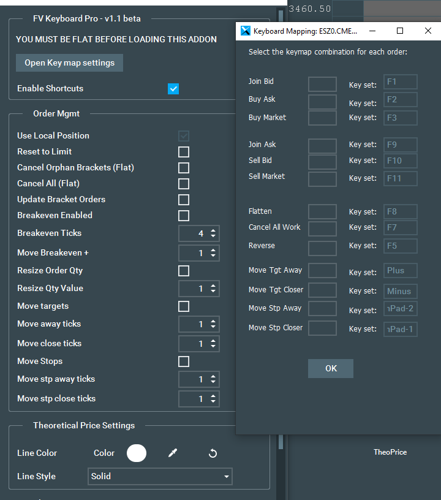

FV Keyboard
User assignable keyboard shortcuts for quick execution using Bookmap
PRO Version
This package was designed to provide traders with execution commonly offered on other platforms, including client requests along with adding some of the more advanced features as seen on professional execution platforms.
Currently this addon is only supported if you are FLAT before loading it.
Features:
Keyboard shortcuts: User assignable keyboard shortcuts for quick execution using Bookmap’s Trading Control Panel functions
Join Bid/Ask
Buy Bid/Sell Ask
Buy/Sell Market
Flatten
Cancel All
Reverse
Apart from the Standard Keyboard features we also added the following execution features:
Reset To Limit: when the Bookmap Bracket setting is used and this feature is selected. When a fill for the pending order is detected the Bracket orders will be placed and then will be automatically disabled on Bookmap's trading panel. This is for those times when a trader may want to scale out/into position using limit orders without sending a new Bracket and offset prices.
Cancel All (Flat) With this feature enabled, the addon will send a cancel all request when a position becomes FLAT. This helps killing any extra/pending orders.
Cancel Orphan Brackets (Flat): Similar to the previous feature but this one will cancel only orphan bracket orders when a position becomes FLAT.
Update Child Orders: enabled the auto update of the child orders quantity of the already pending bracket orders.(used if traders always want a stop and target for each filled order). This setting will offset the bracket orders if you scale out your position.
Breakeven Enabled: enable a function that will automatically move the stop to breakeven.
Breakeven ticks: this will use the detected fill price and move the stop only when the fill price +/- X ticks becomes the best bid or offer.
Move Breakeven +: this will set the stop + X ticks from the fill price detected.
Resize Order Qty: This will reset the default order quantity back to the user default setting after an increase/decrease to the default order size. (Used as a default reset when a trader wishes to temporarily increase order entry/exit size)
Resize Qty Value: this will set the default user defined order size to be used upon the reset.
Move Targets: used to enable the function that will allow the KB to be used to move the target order away from or closer to the initial fill price.
Move Away ticks: this is the qty of X ticks at which the target will move away from the initial fill price each time the key is hit.
Move Close Ticks: this is the qty of X ticks at which the target will move closer to the initial fill price each time the key is hit.
Move Stops: used to enable the function that will allow the KB to be used to move the stop order away from or closer to the initial fill price.
Move Stp Away ticks: this is the qty of X ticks at which the stop will move away from the initial fill price each time the key is hit.
Move Stp Close Ticks: this is the qty of X ticks at which the stop will move closer to the initial fill price each time the key is hit.
Theoretical Price Settings: This will calculate the initial open order fill price +/- any profit or loss and plot a line where the b/e price on the open trade is.

Standard Version
User assignable keyboard shortcuts for quick execution using Bookmap’s Trading Control Panel functions.

How to set a key
1) Load the addon .jar file on Bookmap
2) Open the key map settings and setup your keys/shortcuts
By default the following keys are auto selected:
If you wish to change a key you must click on the left box and then type the key you want to set.
Because you cannot assign the same key to different fields you must first set the left field to a key other than the key you wish to use. Then assign the one you wish to use. For example if I want to set the Buy Ask to F1 key I would have to select the Join Bid first and set it to another key e.g.: "P" and then I will be able to set Buy Ask to F1.
In this example the key was changed to F11:

3) Enable the addon by checking the “Enable Shortcuts” box
4) Enable Bookmap trading panel and set your order size:

After that you are ready to start using the keyboard shortcuts.